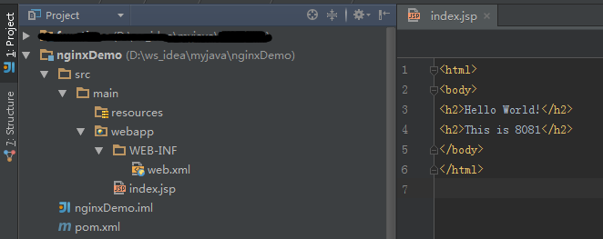
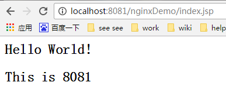
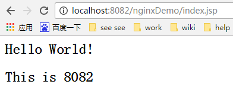
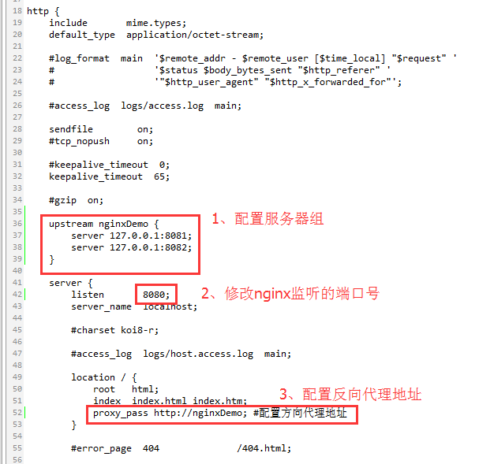
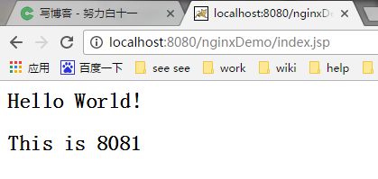
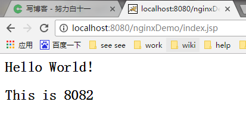

一、Hello world
1、前期环境准备
- 准备两个解压版tomcat，如何同时启动两个tomcat，请看我的另一篇文章《一台机器同时启动多个tomcat》。
- nginx官网下载解压版nginx。
- 创建一个简单的web项目。为了直观的区分访问的哪个tomcat，在页面写上标记8081、8082。
 - 分别部署到对应的tomcat下。如图：
2、配置nginx
进入nginx-1.10.1\conf路径，修改配置文件nginx.conf。 配置服务器组，在http{}节点之间添加upstream配置。（注意不要写localhost，不然访问速度会很慢）
1
2
3
4upstream nginxDemo {
server 127.0.0.1:8081; #服务器地址1
server 127.0.0.1:8082; #服务器地址2
}修改nginx监听的端口号80，改为8080。
1
2
3
4server {
listen 8080;
......
}在location{}中，利用proxy_pass配置反向代理地址；此处“http://”不能少，后面的地址要和第一步upstream定义的名称保持一致。
1
2
3
4
5location / {
root html;
index index.html index.htm;
proxy_pass http://nginxDemo; #配置方向代理地址
}
如下图：

3、启动nginx和tomcat，访问
我是Windows系统，所以直接在nginx-1.10.1目录下双击nginx.exe即可。
最后在浏览器输入地址：http://localhost:8080/nginxDemo/index.jsp，每次访问就会轮流访问tomcat了（如果F5刷新不管用，建议试试鼠标指针放到地址栏，点击Enter键）。


到这里，一个非常简单的负载均衡就配置完成了，是不是很简单呢，O(∩_∩)O哈哈~
二、nginx负载均衡策略
1、轮询（默认）
每个web请求按时间顺序逐一分配到不同的后端服务器，如果后端服务器down掉，能自动剔除。1
2
3
4upstream nginxDemo {
server 127.0.0.1:8081;
server 127.0.0.1:8082;
}
2、最少链接
web请求会被转发到连接数最少的服务器上。1
2
3
4
5upstream nginxDemo {
least_conn;
server 127.0.0.1:8081;
server 127.0.0.1:8082;
}
3、weight 权重
指定轮询几率，weight和访问比率成正比，用于后端服务器性能不均的情况，weight默认是1。1
2
3
4
5#服务器A和服务器B的访问比例为：2-1;比如有3个请求，前两个会访问A，三个访问B，其它规则和轮询一样。
upstream nginxDemo {
server 127.0.0.1:8081 weight=2; #服务器A
server 127.0.0.1:8082; #服务器B
}
4、ip_hash
每个请求按访问ip的hash值分配，这样同一客户端连续的Web请求都会被分发到同一服务器进行处理，可以解决session的问题。当后台服务器宕机时，会自动跳转到其它服务器。1
2
3
4
5upstream nginxDemo {
ip_hash;
server 127.0.0.1:8081 weight=2; #服务器A
server 127.0.0.1:8082; #服务器B
}
基于weight的负载均衡和基于ip_hash的负载均衡可以组合在一起使用。
5、url_hash（第三方）
url_hash是nginx的第三方模块，nginx本身不支持，需要打补丁。
nginx按访问url的hash结果来分配请求，使每个url定向到同一个后端服务器，后端服务器为缓存服务器、文件服务器、静态服务器时比较有效。缺点是当后端服务器宕机的时候，url_hash不会自动跳转的其他缓存服务器，而是返回给用户一个503错误。1
2
3
4
5upstream nginxDemo {
server 127.0.0.1:8081; #服务器A
server 127.0.0.1:8082; #服务器B
hash $request_url;
}
6、fair（第三方）
按后端服务器的响应时间来分配请求，响应时间短的优先分配。1
2
3
4
5upstream nginxDemo {
server 127.0.0.1:8081; #服务器A
server 127.0.0.1:8082; #服务器B
fair;
}
三、集群/分布式环境下session处理策略
因为很多朋友提到session的管理问题，所以接下来决定写一下在集群/分布式环境下session处理策略。
1、为什么要处理session？
这个问题想必大多数朋友都知道，在搭建完集群或者分布式环境之后，如果不做任何处理的话，网站将频繁的出现用户未登录的现象。比如：集群中有A、B两台服务器，用户第一次访问网站时，Nginx将用户请求分发到A服务器，这时A服务器给用户创建了一个Session，当用户第二次访问网站时，假设Nginx将用户请求分发到了B服务器上，而这时B服务器并不存在用户的Session，所以就会出现用户未登录的情况，这对用户来说是不可忍受的。
所以我们在搭建集群/分布式环境之后，必须考虑的一个问题就是用户访问产生的session如何处理，即session的共享机制。
我们将处理Session的方式大致分为三种：Session保持（也有人叫黏性Session）、Session复制、Session共享。
2、Session保持（或者叫黏性Session）
Session保持（会话保持）就是将用户锁定到某一个服务器上。比如上面说的例子，用户第一次请求时，负载均衡器（Nginx）将用户的请求分发到了A服务器上，如果负载均衡器（Nginx）设置了Session保持的话，那么用户以后的每次请求都会分发到A服务器上，相当于把用户和A服务器粘到了一块，这就是Session保持的原理。Session保持方案在所有的负载均衡器都有对应的实现。而且这是在负载均衡这一层就可以解决Session问题。
优点：非常简单，不需要对session做任何处理。
缺点：1、负责不绝对均衡了：由于使用了Session保持，很显然就无法保证负载绝对的均衡。
2、缺乏容错性：如果后端某台服务器宕机，那么这台服务器的Session丢失，被分配到这台服务请求的用户还是需要重新登录，所以没有彻底的解决问题。
适用场景：发生故障对客户产生的影响较小；服务器发生故障是低概率事件。
实现方式：以Nginx为例，在upstream模块配置ip_hash属性即可实现粘性Session，具体可以参考2.4章节。
3、Session复制
针对Session保持的容错性缺点，我们可以在所有服务器上都保存一份用户的Session信息。这种将每个服务器中的Session信息复制到其它服务器上的处理办法就称为会话复制。当任何一台服务器上的session发生改变时，该节点会把session的所有内容序列化，然后广播给所有其它节点，不管其他服务器需不需要session，以此来保证Session同步。
优点：可容错，各个服务器间的Session能够实时响应。
缺点：将session广播同步给成员，会对网络负荷造成一定压力；如果session量大的话可能会造成网络堵塞，拖慢服务器性能，特别是session保存的对象较大，并且对象变化较快时；从而也使应用水平扩展受到限制；
session内容的序列化，也消耗了系统的性能；实现方式局限，必须在同一种组件之间实现（比如用的tomcat，则必须全部用tomcat）。
实现方式：tomcat本身已支持该功能，可以参考官方文档。
官网介绍已经很详细，这里不再介绍。而且这种处理方式，在大的集群中也不推荐生产环境使用。
tomcat的会话复制分为两种：
- 全局复制(DeltaManager)：复制会话中的变更信息到集群中的所有其他节点。
- 非全局复制（BackupManager）：它会把Session复制给一个指定的备份节点。
4、Session共享
Session共享的实现方式有很多种，比如memcached、Redis、DB等；核心思想是修改tomcat的session存储机制，使之能够把session序列化，然后存放到memcached中。
使用Session共享可以分为两种机制：
- 黏性Session处理方式：
Tomcat本地Session为主Session，Memcached 中的Session为备Session。用户访问时首先在tomcat中创建session，然后将session复制一份放到对应的memcahed上。memcache只起备份作用，读写都在tomcat上。当某一个tomcat挂掉后，集群将用户的访问定位到备tomcat上，然后根据cookie中存储的SessionId找session，找不到时，再去相应的memcached上取session，找到之后将其复制到备tomcat上。 - 非黏性Session处理方式：
Tomcat本地Session为中转Session，Memcached为主备Session。创建的session都往memcached上写，读取都从memcached读取，tomcat本身不存储session。
实现方式1：Tomcat+Nginx+MSM+memcached
a. 相关jar包放到tomcat/lib目录下：
- Java memcached客户端：spymemcached.jar
- MSM：
- 核心包，memcached-session-manager-{version}.jar
- Tomcat版本对应的jar包：memcached-session-manager-tc{tomcat-version}-{version}.jar
- 序列化工具包：可选kryo（据说效率比较快），javolution，xstream等，不设置时使用jdk默认序列化。
b. Tomcat文件tomcat\conf\context.xml添加：
黏性处理方式：1
2
3
4
5<Manager className="de.javakaffee.web.msm.MemcachedBackupSessionManager"
memcachedNodes="n1:192.168.2.61:11211,n2:192.168.2.66:11211"
requestUriIgnorePattern=".*\.(ico|png|gif|jpg|css|js)$"
transcoderFactoryClass="de.javakaffee.web.msm.serializer.kryo.KryoTranscoderFactory"
/>
非黏性处理方式：1
2
3
4
5
6
7
8
9<Manager className="de.javakaffee.web.msm.MemcachedBackupSessionManager"
memcachedNodes="n1:192.168.2.61:11211,n2:192.168.2.66:11211"
sticky="false"
lockingMode="auto"
requestUriIgnorePattern=".*\.(ico|png|gif|jpg|css|js)$"
sessionBackupAsync= "false"
sessionBackupTimeout= "100"
transcoderFactoryClass="de.javakaffee.web.msm.serializer.kryo.KryoTranscoderFactory"
/>
Manager标签属性说明
扫描二维码，分享此文章